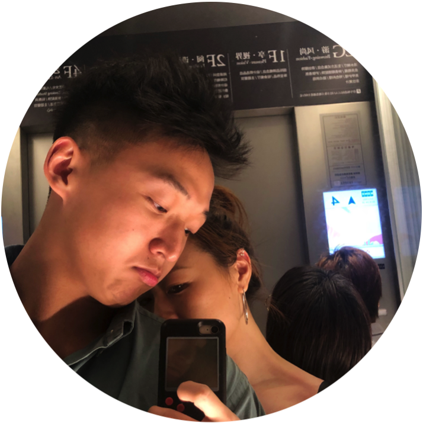

Jiawei He / Anson He
MSCS Student @ Northeastern University Vancouver üá®üᶠ/ Ex - Product Manager
Future Web Developer ü뮂Äçüíª
Summary
I'm an experienced Product Manager in IoT and Consumer Electronics with a 3-year track record. Skilled in translating customer needs into actionable requirements and eventually launching desirable products.
Currently pursuing a MS Computer Science program at Northeastern University to enhance skills for future products/career opportunities. I aspire to secure a software development engineer internship at a tech giant dedicated to making a positive global impact.
Technical Skills
-
Skills: Data/Trend/SWOT Analysis; Product Management Workflow; Cross-functional Teams; Quality Assurance Management; IoT Product Management,
- Languages: Python, C, Java
- Technologies: XMind, Git, Linux
Education
Northeastern University (Vancouver) / Sep 2023 ~ Sep 2025
Computer Science MS
-
Relevant Coursework: Computer Systems, Object Oriented Design, Database Management Systems, Data Structures and Algorithms.
University of Exeter (QS: 164th) / Sep 2015 ~ Jun 2018
Electronic Engineering BEng(Hons)
-
Grade: First Class Honours (Incl. First Class Dissertation) / WES GPA: 3.90/4.00
-
Related Course: Scientific Programming in C; Digital Signal Processing; Pics, Microcontrollers and Microprocessors; Analogue and Digital Electronics Design; Mathematical Modelling of Engineering Systems
Professional Experience
Ugroup Limited (Consumer Electronics Company) / Jun 2021 ~ Jun 2023
Senior Product Engineer
Product Lead for the brand new Power Strips product line achieved $4.8M+ in product sales revenue in 1.5 years.
- Assume full responsibility for populating the overall roadmap for the Power Strips product line, ensuring a continual stream of new and innovative products are consistently brought to the consumer electronics market.
- 17+ products were launched for the Chinese market and 9+ products for the international market.
- Collaborates with dedicated resources, e.g. R&D, Engineering Dept., Supply Chain, and other Marketing and Sales teams to optimize the in-market performance of products to attain revenue and margin goals.
- Also responsible for monitoring product performance in-market (financial, operational, and customer satisfaction).
- Conduct market research, and draft consumer surveys to collect feedback on product range in order to deliver functional and quality improvements.
Contact